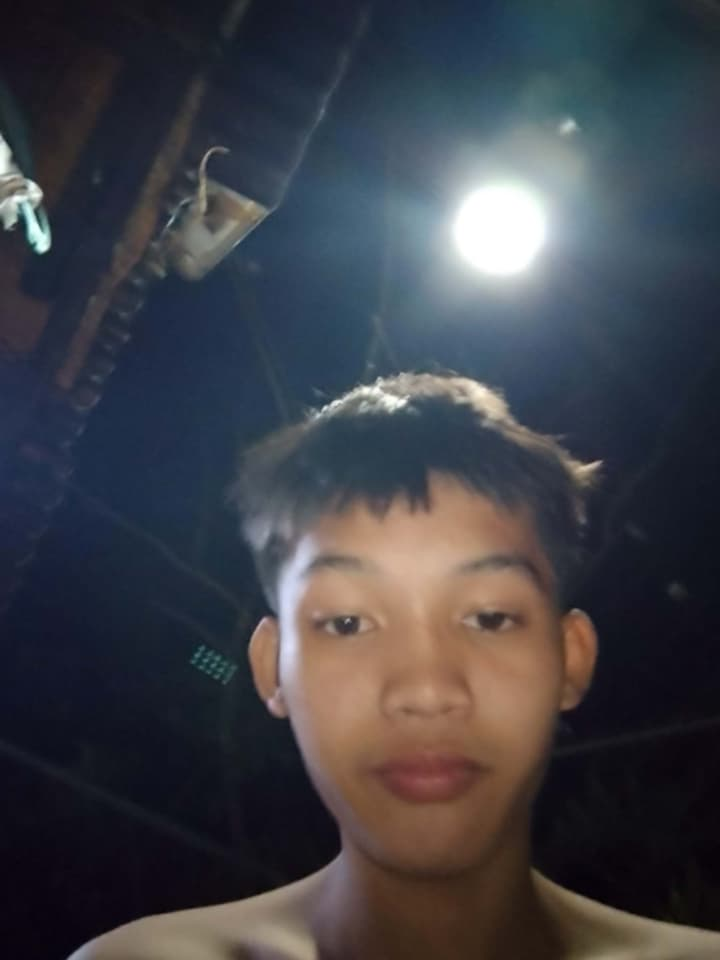

My name is Earl keith C. unde
I am a Grade 11 ICT student.
My birthday is on febuary 7 2010.

This image represents me as a learner and future programmer.I enjoy learning about computers, programming, and technology. I am hardworking, responsible, and always willing to learn new things. My goal is to improve my skills and become successful in the future.
These are some of the hobbies and interests that describe me:
Below are my top five favorite foods:
I like to sleep,and I especially love dogs.
This audio represents one of my favorite songs that helps me relax and stay motivated.These are some of my educational goals as a learner:
These are some of the activities I usually do every day:
These are the important goals I want to achieve:
My dream career is to become a Software Developer I want to create useful programs, solve problems with technology, and continue improving my programming skills.
I enjoy listening to music, playing games, learning new technology, and spending time with my family and friends.
"Believe in yourself, work hard, and never give up."
Thank you for reading my personal profile!